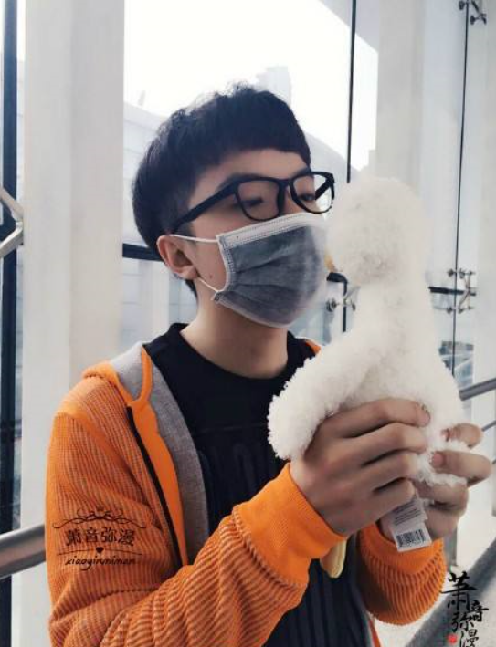

萧忆情
- 出生日期：1998.6.6
- 圈名：萧忆情Alex
- 昵称：仙儿，仙鹅，我鸟，鹅皇
- 所在地区：湖南
- 身高：176cm
- 体重：65kg
- 星座：双子座
- 声音状态：风格多样
- 音乐类型：古风，流行等

对于ACGN爱好者来说，8月27-28日在海南国际会展中心举行的QQJOY（企鹅动漫游戏嘉年华）一定不能错过。在本届QQJOY上，除了精美绝伦的Cosplay、紧张刺激的电竞大赛等好玩内容外，还有众多娱乐明星的精彩表演和现场签售，知名二次元歌手萧忆情Alex就将现身现场，为你带来一场不一样的视听盛宴。 萧忆情Alex是微博音乐人、B站知名up主，在微博和B站上拥有大量粉丝，因其独特嗓音和古风风格广受喜爱，被粉丝们亲切的称为“仙儿”，代表作品有《清风与我》、《兔子先生》等，最新作品则是唯美清新风的《清明雨上》。 除了现场演唱之外，萧忆情Alex还将作为特约嘉宾，和言情天后叶非夜、知名coser黄靖翔、押切等在QQJOY现场进行签售活动千万不要错过了和偶像零距离亲密接触的机会！